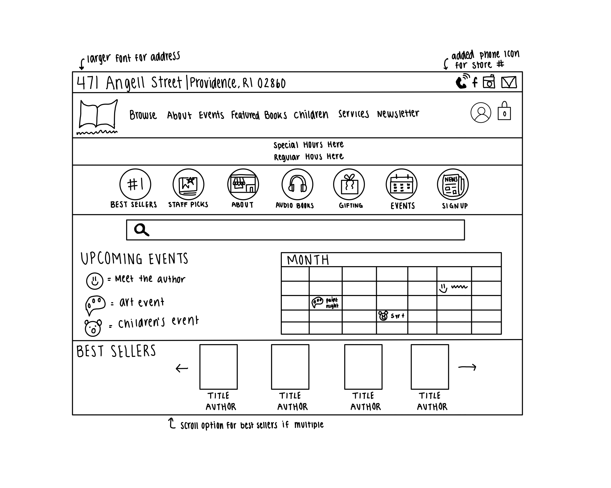
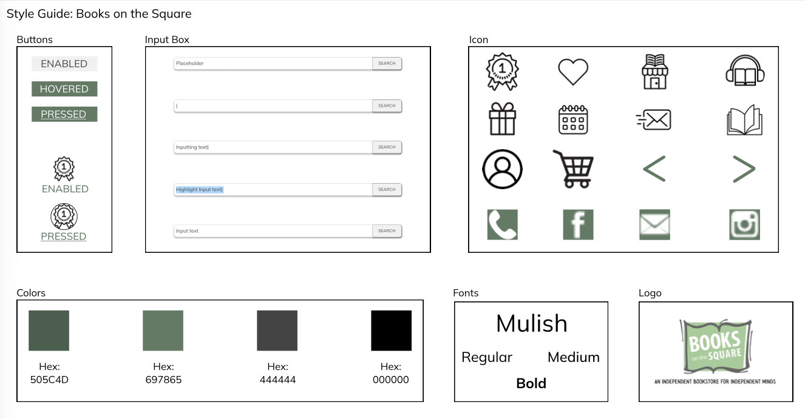

Project Overview and Purpose
The goal of this assignment was to practice the workflow of redesigning a simple website.
We were challenged to chose any one page of a website and identify between effective and ineffective design elements in website's original interface.
From there, we were asked to create low and high fidelity prototypes for various screen sizes, and build a responsive website using HTML/CSS based on our designs.
Below is a screenshot of my final redesign:

To view my redesign of the website on a browser of your choice click here
Main Takeaways
- Mockups and the design process from sketches to high fidelity are extremely helpful in visualizing design decisions
- When building a responsive website, it is important to keep in mind how you want to adjust your designs to align with various screen sizes
- Visual hierarchy plays a crucial role in guiding users' attention and understanding of content on a webpage
- It is important to implement accessibility practices to ensure the website is usable to all users regardless of disabilities
Website Information
The website I chose to do my project on is Books on the Square.
Here is a link to the original page.
What is Books on the Square?
Books on the Square is an independent bookstore in Providence, Rhode Island located on Wayland Square. As a kid, my parents used to take me to Books on the Square on the weekends so I have many fond memories there. I selected this website because, as far as I can recall, it has remained unchanged since my middle school days. However, I believe the website’s current format could benefit greatly from a cleaner, more modern design.
Original Website's Usability and Assessibility Problems
Usability Problems
- The boldness and size of the headers vary in sizes which disrupts the visual hierarchy of the webpage
- The images of the books listed under the "#1 Bestsellers" section vary in size, and some of the book covers are challenging to read directly from the images.
- Some elements on the page are not clearly identifiable as buttons, making it difficult for users to discern their interactive functionality.
- Upcoming events could be presented in a more visually appealing format, such as utilizing a calendar layout, to enhance the overall aesthetic of the display.
Assessibility Problems
I tested the accessibility problems of this website using both WebAimWAVE and Lighthouse. On Lighthouse, it shows a score of 100 in terms of accessibility. Using WebAimWAVE, three errors are presented about empty buttons and 41 alerts about the texts and or redundant links. Though these tools show that there are few accessibility issues with Books on the Square, I believe major adjustments on how the information is presented can be made to enhance the user experience. Addressing these issues such as making sure buttons are identifiable as interactive elements and adjusting the layout and flow of content on the screen can enhance the overall aesthetic appeal of the website.

My Redesign Experience
Notes
- The buttons on the top contact container are interactive and lead to the approprate contact mediums
- In the first navigation section, when you hover over the words, you are shown toggle options that change color as you select with your cursor
- You are able to type into the search bar!
- Selecting the circular images in the second navigation sections takes you the the orignal websites redirected pages
Problems
- I had the most problems redesigning for the mobile screen size and had to alter my course of action. In the last section that reads "2023 Best Sellers" I had to make it so that the images are lined up vertically instead of horizontally as I felt like having them horizontally made the book titles harder to read.
- The images of the books listed under the "#1 Bestsellers" section vary in size, and some of the book covers are challenging to read directly from the images.
Future Work
- Fix the best sellers section so a user can scroll left or right to different novel options and not just my three dummy placeholders
- Change the layout of how the upcoming events texts is represented. I would want to alter the html file for this so that the text is more horizontally spaced out and not just confined into bullet points
- Make the calendar myself like I did in my Figma instead of an image place holder
Sketches
Crazy 9 Speed Sketches

Final Sketch
Figma Link
Click here to access my Figma design board
Low-Fidelity Mockups
Desktop Version

iPad Version

iPhone Version

High-Fidelity Mockups
Desktop Version


iPad Version


iPhone Version


Style Guide
-
